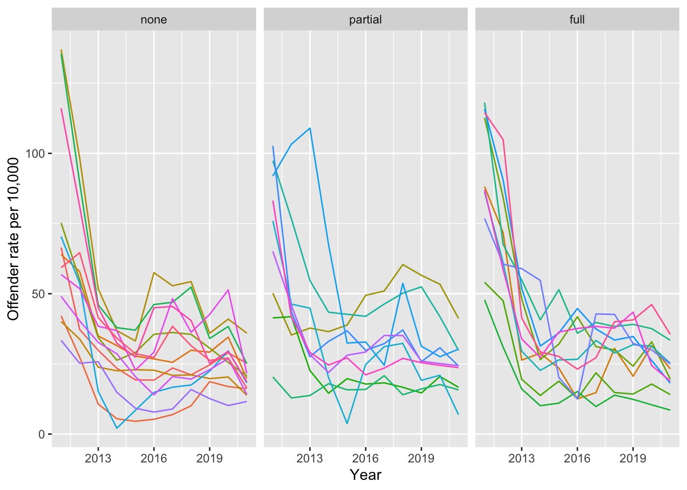
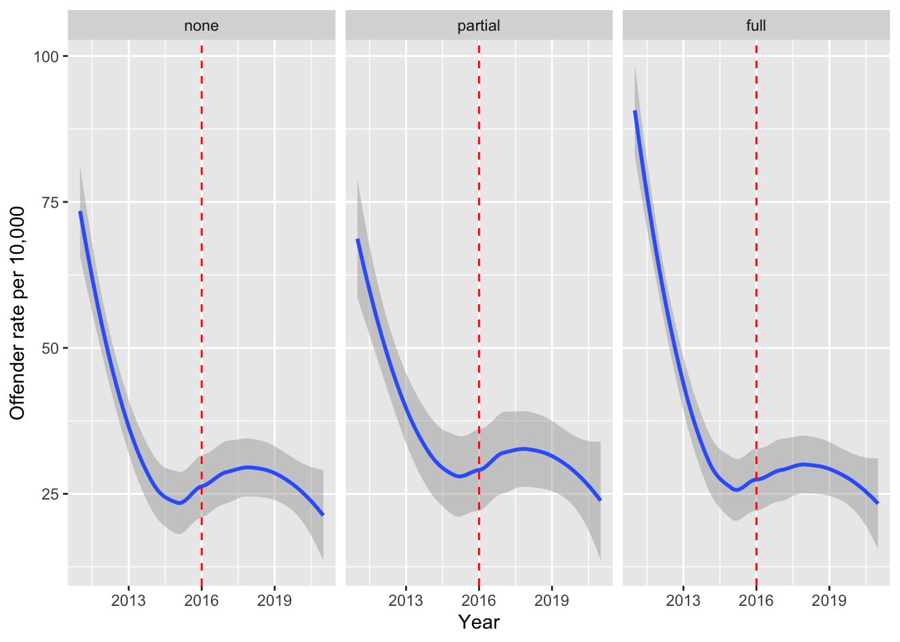
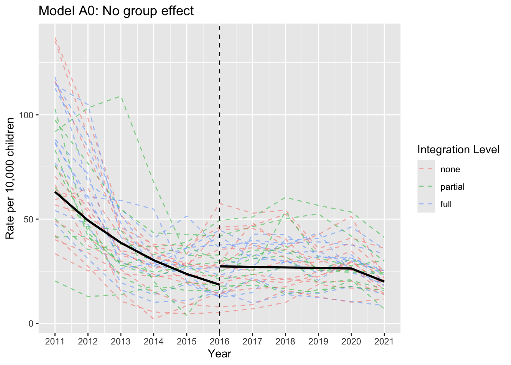
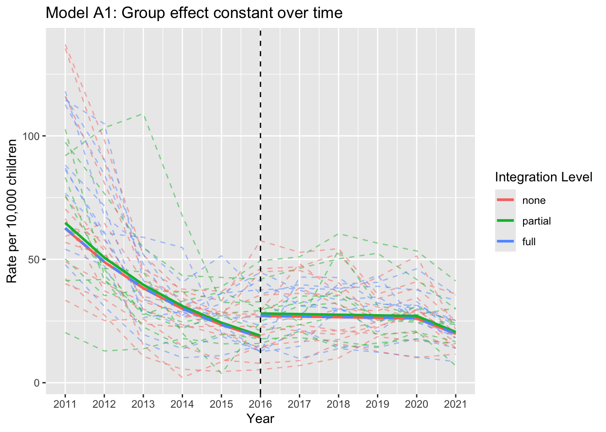
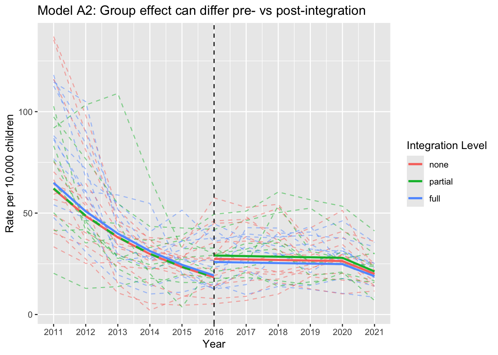

1.2 Children’s services reform in Scotland
In 2021, the Scottish Government committed to building a National Care Service to be responsible for adults’ social work and social care support, as well as taking responsibility for the planning and commissioning of community health services. This led to the question of whether children’s services should also be included. In 2022, CELCIS, a centre for excellence for children’s care and protection in Scotland, was asked by the Scottish Government to carry out a research study with the aim of addressing the question: ‘What is needed to ensure that children, young people and families get the help they need, when they need it?’.
Detailed information on the background to the project is available. Strand 3 of the research was entitled Mapping Integration and Outcomes Across Scotland: A Statistical Analysis and it aim to address the specific question:
‘Is the level of structural integration of children’s health and social care services associated with changes in outcomes for children, young people, families, and the workforce?’
To help in answering this question, the researchers looked at the approaches taken towards structural integration following the development of Health and Social Care Partnerships over the last decade in Scotland and 25 indicators associated with the welfare and wellbeing of Scotland’s children, support for families, and the workforce who support them. A zip file containing the data is available through rp.datalink('children_services'). This consists of a folder Data and Code CSRR Strand 3 - August 2023 Update cotaining individual files for one of the indicators (Example_Indicator_CSR.csv), mid-year population estimates (Mid-year-pops-0-17.csv) and contextutal factors (contextual_factors.csv).
How should the data be analysed to address this question?
Analysis
The results were published as a report on statistical analysis and the data and code are also available. This section discusses the analysis which was undertaken. The code used here reformulates some of the code provided with the report above to use the tidyverse form, in order to be consistent with earlier material.
As ever, the first step is to read and organise the data. This has been retrieved from different sources and made available as three separate files, in a folder which has been compressed into a ‘zip’ file. The unz function enables us to read the individual files.
library(rpanel)
library(tidyverse)
library(lme4)
zfile <- rp.datalink("children_services")
dirname <- "Data and Code CSRR Strand 3 - August 2023 Update"
# Read indicator data
path <- unz(zfile, paste(dirname, "Example_Indicator_CSR.csv", sep = "/"))
indicator <-
read_csv(path, skip = 6, col_names = c("LA", 2011:2021)) %>%
pivot_longer(cols = !LA, names_to = "Year", values_to = "Offenders")
# Read mid-year population estimates to convert indicator to rates per 10,000 - using 0-17 population.
path <- unz(zfile, paste(dirname, "Mid-year-pops-0-17.csv", sep = "/"))
mid_year_pops <-
read_csv(path, skip = 3) %>%
rename('LA' = 1) %>%
filter(LA != 'Scotland') %>%
dplyr::select(LA, `2011`:`2021`) %>%
pivot_longer(cols = !LA, names_to = 'Year', values_to = 'young_pop')
# Read data on contextual factors
# The pivot_longer instruction took a very long time to puzzle out!
path <- unz(zfile, paste(dirname, "contextual_factors.csv", sep = "/"))
context <-
read_csv(path, skip = 3, n_max = 32) %>%
mutate(HSCP_start = as.numeric(format(as.Date(HSCP_start, format = "%d-%b-%y"), "%Y"))) %>%
pivot_longer(cols = SIMD_2011:PopDens_2021,
names_to = c(".value", "Year"),
names_sep = "_") %>%
mutate(covid = as.numeric(Year == 2021),
Int_level = recode(Int_level, "No structural integration" = "none",
"Partial structural integration" = "partial",
"Full structural integration" = "full"))Create one dataset containing all data.
## # A tibble: 0 × 3
## # ℹ 3 variables: LA <chr>, Year <chr>, Offenders <dbl>## # A tibble: 0 × 3
## # ℹ 3 variables: LA <chr>, Year <chr>, Offenders <dbl>d <- full_join(indicator, context) %>%
full_join(mid_year_pops) %>%
mutate(Int_level = fct(Int_level, levels=c("none", "partial", "full")),
Coterminous = fct(Coterminous),
LA = fct(LA),
Year = as.numeric(Year),
Year2 = c(scale(Year)),
pre_or_post = fct_recode(fct(as.character(Year - HSCP_start > 0)),
"Pre_Int" = "FALSE", "Post_Int" = "TRUE"),
PopDens = c(scale(PopDens)),
SIMD = c(scale(SIMD)),
rate = Offenders * 10000 / young_pop,
ln_pops = log(young_pop / 10000))
str(d)## tibble [352 × 14] (S3: tbl_df/tbl/data.frame)
## $ LA : Factor w/ 32 levels "Aberdeen City",..: 1 1 1 1 1 1 1 1 1 1 ...
## $ Year : num [1:352] 2011 2012 2013 2014 2015 ...
## $ Offenders : num [1:352] 243 138 111 88 73 73 90 81 96 114 ...
## $ Int_level : Factor w/ 3 levels "none","partial",..: 1 1 1 1 1 1 1 1 1 1 ...
## $ HSCP_start : num [1:352] 2016 2016 2016 2016 2016 ...
## $ Coterminous: Factor w/ 2 levels "No","Yes": 1 1 1 1 1 1 1 1 1 1 ...
## $ SIMD : num [1:352] -0.229 -0.229 -0.229 -0.229 -0.229 ...
## $ PopDens : num [1:352] 0.918 0.935 0.95 0.963 0.973 ...
## $ covid : num [1:352] 0 0 0 0 0 0 0 0 0 0 ...
## $ young_pop : num [1:352] 36561 37060 37182 37519 37775 ...
## $ Year2 : num [1:352] -1.579 -1.263 -0.947 -0.632 -0.316 ...
## $ pre_or_post: Factor w/ 2 levels "Pre_Int","Post_Int": 1 1 1 1 1 1 2 2 2 2 ...
## $ rate : num [1:352] 66.5 37.2 29.9 23.5 19.3 ...
## $ ln_pops : num [1:352] 1.3 1.31 1.31 1.32 1.33 ...Plot data by integration level (ignores correlated data structure so not definitive, but provides an idea of trend.)
ggplot(d, aes(Year, rate, colour = LA)) + geom_line() +
facet_wrap(~ Int_level) + labs(y = "Offender rate per 10,000") +
theme(legend.position = "none")
ggplot(d, aes(Year, rate)) + geom_smooth(aes()) +
facet_wrap(~ Int_level) + labs(y = "Offender rate per 10,000") +
geom_vline(xintercept = 2016, colour = I("red"), linetype = 2)
Negative binomial models. Note - Fit is almost identical with nAGQ=0 but much faster, used to decrease computing time for PBmodcomp.
MODEL A0 - Two slopes model with covariates added and NO integration MODEL A1 - Integration as additive effect (same pre- vs post-) MODEL A2 - Integration as interaction effect (different pre- vs post-)
modelA0 <- glmer.nb(Offenders ~ offset(ln_pops) + Year2 * pre_or_post +
covid + Coterminous + SIMD + PopDens +
(1|LA),
data = d, na.action=na.exclude, nAGQ=0)
# summary(modelA0)
modelA1 <- glmer.nb(Offenders ~ offset(ln_pops) + Int_level +
Year2 * pre_or_post +
covid + Coterminous + SIMD + PopDens +
(1|LA),
data = d, na.action = na.exclude, nAGQ = 0)
# summary(modelA1)
modelA2 <- glmer.nb(Offenders ~ offset(ln_pops) +
Int_level * pre_or_post +
Year2 * pre_or_post +
covid + Coterminous + SIMD + PopDens +
(1|LA),
data = d, na.action = na.exclude, nAGQ = 0)
# summary(modelA2)Set up matrix to plot model estimates for the pre- and post-integration trends, using 2016 as the cutoff.
predict_pre <- expand.grid(Int_level = unique(d$Int_level),
pre_or_post = "Pre_Int",
Year2 = unique(d$Year2[d$Year <= 2016]),
SIMD = 0, covid = 0, PopDens = 0,
Coterminous = "No",
ln_pops = mean(d$ln_pops)) %>%
mutate(Year = rep(2011:2016, each = 3))
predict_post <- expand.grid(Int_level = unique(d$Int_level),
pre_or_post = "Post_Int",
Year2 = unique(d$Year2[d$Year >= 2016]),
SIMD = 0, covid = 0, PopDens = 0,
Coterminous = "No",
ln_pops = mean(d$ln_pops)) %>%
mutate(Year = rep(2016:2021, each = 3),
covid = case_when(Year == 2021 ~ 1, Year != 2021 ~ 0))
prefits_A0 <- predict(modelA0, newdata = predict_pre, re.form= ~0,
type = "response") / exp(mean(d$ln_pops))
postfits_A0 <- predict(modelA0, newdata = predict_post, re.form= ~0,
type = "response") / exp(mean(d$ln_pops))
prefits_A1 <- predict(modelA1, newdata=predict_pre, re.form = ~0,
type = "response") / exp(mean(d$ln_pops))
postfits_A1 <- predict(modelA1, newdata=predict_post, re.form = ~0,
type = "response") / exp(mean(d$ln_pops))
prefits_A2 <- predict(modelA2, newdata = predict_pre, re.form = ~0,
type = "response") / exp(mean(d$ln_pops))
postfits_A2 <- predict(modelA2, newdata = predict_post, re.form = ~0,
type = "response") / exp(mean(d$ln_pops))Create the basic plot then add the specifics for each model This is much neater than repeating code
p <- ggplot(d, aes(Year, rate, colour=Int_level)) +
geom_line(aes(group = LA), alpha = 0.5, linetype = 2) +
geom_vline(xintercept = 2016, linetype = 2) +
labs(y = "Rate per 10,000 children", colour = "Integration Level") +
# scale_colour_manual(values=colours_vec[c(1,3,4)]) +
scale_x_continuous(breaks = 2011:2021)
p + geom_line(data = predict_post, aes(Year, postfits_A0),
linewidth = 1, colour = "black") +
geom_line(data = predict_pre, aes(Year, prefits_A0),
linewidth = 1, colour = "black") +
labs(title = "Model A0: No group effect")
p + geom_line(data = predict_post, aes(Year, postfits_A1),
linewidth = 1, linetype=rep(c(1, 1, 2), each = 6)) +
geom_line(data = predict_pre, aes(Year, prefits_A1),
linewidth = 1, linetype=rep(c(1, 1, 2), each = 6)) +
labs(title = "Model A1: Group effect constant over time")
p + geom_line(data = predict_post, aes(Year, postfits_A2),
linewidth = 1, linetype=rep(c(1, 1, 1), each = 6)) +
geom_line(data = predict_pre, aes(Year, prefits_A2),
linewidth = 1, linetype=rep(c(1, 2, 1), each = 6)) +
labs(title = "Model A2: Group effect can differ pre- vs post-integration")
Model comparison: set seed so simulations are reproducible. Note the use of the :: syntax to avoid loading the full package.
Results:
## stat df p.value
## LRT 0.06218459 2 0.9693861
## PBtest 0.06218459 NA 0.9750250